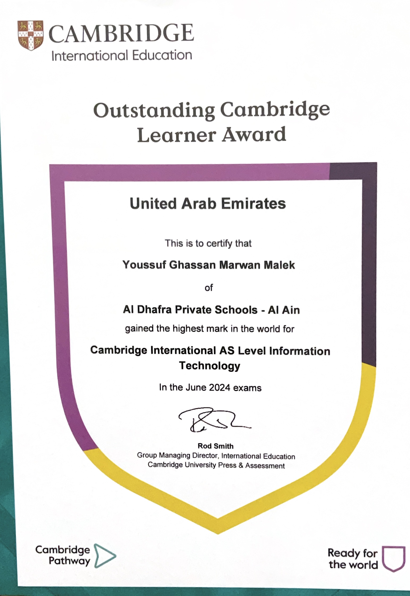
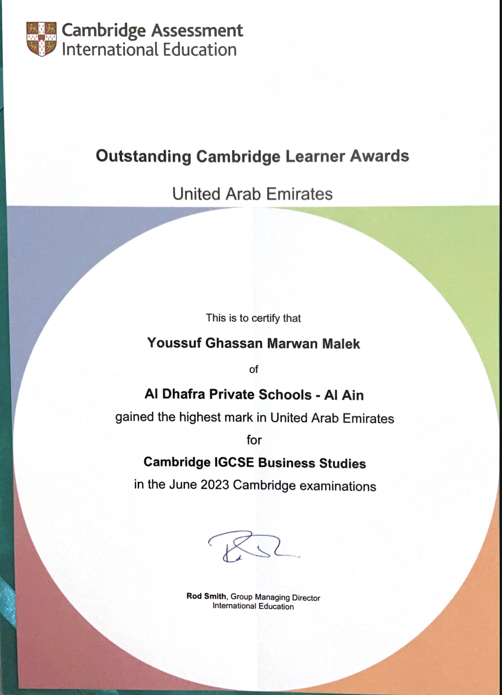

I am excited to share with you these two certificates that not only act as important milestones for my future career, but also as evidence to my commitment and hardwork towards my studies. I look forward to adding more certifications as I continue to grow and expand my expertise.
June 2024

Top in the world in AS Information Technology
Highest raw mark in AS Information Technology in the world for the May/June 2024 CIE examinations
June 2023

Top in the UAE in IGCSE Business Studies
Highest raw mark in IGCSE Business Studies in the UAE for the May/June 2023 CIE examinations